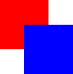
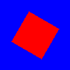
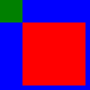
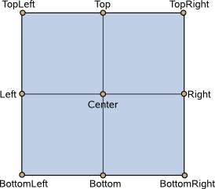
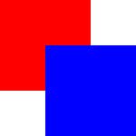
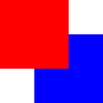
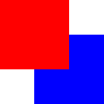

QQuickItem Class
The QQuickItem class provides the most basic of all visual items in Qt Quick. More...
| Header: | #include <QQuickItem> |
| CMake: | find_package(Qt6 REQUIRED COMPONENTS Quick) target_link_libraries(mytarget PRIVATE Qt6::Quick) |
| qmake: | QT += quick |
| Instantiated By: | WindowContainer |
| Inherits: | QObject and QQmlParserStatus |
| Inherited By: | QQuickFramebufferObject, QQuickPaintedItem, and QQuickRhiItem |
Public Types
| union | ItemChangeData |
| enum | Flag { ItemClipsChildrenToShape, ItemAcceptsInputMethod, ItemIsFocusScope, ItemHasContents, ItemAcceptsDrops, …, ItemObservesViewport } |
| flags | Flags |
| enum | ItemChange { ItemChildAddedChange, ItemChildRemovedChange, ItemSceneChange, ItemVisibleHasChanged, ItemParentHasChanged, …, ItemEnabledHasChanged } |
| enum | TransformOrigin { TopLeft, Top, TopRight, Left, Center, …, BottomRight } |
Properties
|
Public Functions
| QQuickItem(QQuickItem *parent = nullptr) | |
| virtual | ~QQuickItem() override |
| bool | acceptHoverEvents() const |
| bool | acceptTouchEvents() const |
| Qt::MouseButtons | acceptedMouseButtons() const |
| bool | activeFocusOnTab() const |
| bool | antialiasing() const |
| qreal | baselineOffset() const |
| QBindable<qreal> | bindableHeight() |
| QBindable<qreal> | bindableWidth() |
| QBindable<qreal> | bindableX() |
| QBindable<qreal> | bindableY() |
| virtual QRectF | boundingRect() const |
| QQuickItem * | childAt(qreal x, qreal y) const |
| QList<QQuickItem *> | childItems() const |
| QRectF | childrenRect() |
| bool | clip() const |
| virtual QRectF | clipRect() const |
| QObject * | containmentMask() const |
| virtual bool | contains(const QPointF &point) const |
| QCursor | cursor() const |
(since 6.3) void | dumpItemTree() const |
(since 6.3) void | ensurePolished() |
| bool | filtersChildMouseEvents() const |
| QQuickItem::Flags | flags() const |
| Qt::FocusPolicy | focusPolicy() const |
| void | forceActiveFocus() |
| void | forceActiveFocus(Qt::FocusReason reason) |
| QSharedPointer<QQuickItemGrabResult> | grabToImage(const QSize &targetSize = QSize()) |
| bool | hasActiveFocus() const |
| bool | hasFocus() const |
| qreal | height() const |
| qreal | implicitHeight() const |
| qreal | implicitWidth() const |
| virtual QVariant | inputMethodQuery(Qt::InputMethodQuery query) const |
| bool | isAncestorOf(const QQuickItem *child) const |
| bool | isEnabled() const |
| bool | isFocusScope() const |
| virtual bool | isTextureProvider() const |
| bool | isVisible() const |
| bool | keepMouseGrab() const |
| bool | keepTouchGrab() const |
| QPointF | mapFromGlobal(const QPointF &point) const |
| QPointF | mapFromItem(const QQuickItem *item, const QPointF &point) const |
| QPointF | mapFromScene(const QPointF &point) const |
| QRectF | mapRectFromItem(const QQuickItem *item, const QRectF &rect) const |
| QRectF | mapRectFromScene(const QRectF &rect) const |
| QRectF | mapRectToItem(const QQuickItem *item, const QRectF &rect) const |
| QRectF | mapRectToScene(const QRectF &rect) const |
| QPointF | mapToGlobal(const QPointF &point) const |
| QPointF | mapToItem(const QQuickItem *item, const QPointF &point) const |
| QPointF | mapToScene(const QPointF &point) const |
| QQuickItem * | nextItemInFocusChain(bool forward = true) |
| qreal | opacity() const |
| QQuickItem * | parentItem() const |
| void | polish() |
| void | resetAntialiasing() |
| void | resetHeight() |
| void | resetWidth() |
| qreal | rotation() const |
| qreal | scale() const |
| QQuickItem * | scopedFocusItem() const |
| void | setAcceptHoverEvents(bool enabled) |
| void | setAcceptTouchEvents(bool enabled) |
| void | setAcceptedMouseButtons(Qt::MouseButtons buttons) |
| void | setActiveFocusOnTab(bool) |
| void | setAntialiasing(bool) |
| void | setBaselineOffset(qreal) |
| void | setClip(bool) |
| void | setContainmentMask(QObject *mask) |
| void | setCursor(const QCursor &cursor) |
| void | setEnabled(bool) |
| void | setFiltersChildMouseEvents(bool filter) |
| void | setFlag(QQuickItem::Flag flag, bool enabled = true) |
| void | setFlags(QQuickItem::Flags flags) |
| void | setFocus(bool) |
| void | setFocus(bool focus, Qt::FocusReason reason) |
| void | setFocusPolicy(Qt::FocusPolicy policy) |
| void | setHeight(qreal) |
| void | setImplicitHeight(qreal) |
| void | setImplicitWidth(qreal) |
| void | setKeepMouseGrab(bool keep) |
| void | setKeepTouchGrab(bool keep) |
| void | setOpacity(qreal) |
| void | setParentItem(QQuickItem *parent) |
| void | setRotation(qreal) |
| void | setScale(qreal) |
| void | setSize(const QSizeF &size) |
| void | setSmooth(bool) |
| void | setState(const QString &) |
| void | setTransformOrigin(QQuickItem::TransformOrigin) |
| void | setVisible(bool) |
| void | setWidth(qreal) |
| void | setX(qreal) |
| void | setY(qreal) |
| void | setZ(qreal) |
| QSizeF | size() const |
| bool | smooth() const |
| void | stackAfter(const QQuickItem *sibling) |
| void | stackBefore(const QQuickItem *sibling) |
| QString | state() const |
| virtual QSGTextureProvider * | textureProvider() const |
| QQuickItem::TransformOrigin | transformOrigin() const |
| void | unsetCursor() |
| QQuickItem * | viewportItem() const |
| qreal | width() const |
| QQuickWindow * | window() const |
| qreal | x() const |
| qreal | y() const |
| qreal | z() const |
Public Slots
| void | update() |
Signals
| void | activeFocusChanged(bool) |
| void | activeFocusOnTabChanged(bool) |
| void | antialiasingChanged(bool) |
| void | baselineOffsetChanged(qreal) |
| void | childrenRectChanged(const QRectF &) |
| void | clipChanged(bool) |
| void | containmentMaskChanged() |
| void | enabledChanged() |
| void | focusChanged(bool) |
| void | focusPolicyChanged(Qt::FocusPolicy) |
| void | heightChanged() |
| void | implicitHeightChanged() |
| void | implicitWidthChanged() |
| void | opacityChanged() |
| void | parentChanged(QQuickItem *) |
| void | rotationChanged() |
| void | scaleChanged() |
| void | smoothChanged(bool) |
| void | stateChanged(const QString &) |
| void | transformOriginChanged(QQuickItem::TransformOrigin) |
| void | visibleChanged() |
| void | widthChanged() |
| void | windowChanged(QQuickWindow *window) |
| void | xChanged() |
| void | yChanged() |
| void | zChanged() |
Protected Functions
| virtual bool | childMouseEventFilter(QQuickItem *item, QEvent *event) |
| virtual void | dragEnterEvent(QDragEnterEvent *event) |
| virtual void | dragLeaveEvent(QDragLeaveEvent *event) |
| virtual void | dragMoveEvent(QDragMoveEvent *event) |
| virtual void | dropEvent(QDropEvent *event) |
| virtual void | focusInEvent(QFocusEvent *event) |
| virtual void | focusOutEvent(QFocusEvent *event) |
(since 6.0) virtual void | geometryChange(const QRectF &newGeometry, const QRectF &oldGeometry) |
| bool | heightValid() const |
| virtual void | hoverEnterEvent(QHoverEvent *event) |
| virtual void | hoverLeaveEvent(QHoverEvent *event) |
| virtual void | hoverMoveEvent(QHoverEvent *event) |
| virtual void | inputMethodEvent(QInputMethodEvent *event) |
| bool | isComponentComplete() const |
| virtual void | itemChange(QQuickItem::ItemChange change, const QQuickItem::ItemChangeData &value) |
| virtual void | keyPressEvent(QKeyEvent *event) |
| virtual void | keyReleaseEvent(QKeyEvent *event) |
| virtual void | mouseDoubleClickEvent(QMouseEvent *event) |
| virtual void | mouseMoveEvent(QMouseEvent *event) |
| virtual void | mousePressEvent(QMouseEvent *event) |
| virtual void | mouseReleaseEvent(QMouseEvent *event) |
| virtual void | mouseUngrabEvent() |
| virtual void | releaseResources() |
| virtual void | touchEvent(QTouchEvent *event) |
| virtual void | touchUngrabEvent() |
| void | updateInputMethod(Qt::InputMethodQueries queries = Qt::ImQueryInput) |
| virtual QSGNode * | updatePaintNode(QSGNode *oldNode, QQuickItem::UpdatePaintNodeData *updatePaintNodeData) |
| virtual void | updatePolish() |
| virtual void | wheelEvent(QWheelEvent *event) |
| bool | widthValid() const |
Reimplemented Protected Functions
| virtual void | classBegin() override |
| virtual void | componentComplete() override |
| virtual bool | event(QEvent *ev) override |
Detailed Description
All visual items in Qt Quick inherit from QQuickItem. Although a QQuickItem instance has no visual appearance, it defines all the attributes that are common across visual items, such as x and y position, width and height, anchoring and key handling support.
You can subclass QQuickItem to provide your own custom visual item that inherits these features.
Custom Scene Graph Items
All visual QML items are rendered using the scene graph, the default implementation of which is a low-level, high-performance rendering stack, closely tied to accelerated graphics APIs, such as OpenGL, Vulkan, Metal, or Direct 3D. It is possible for subclasses of QQuickItem to add their own custom content into the scene graph by setting the QQuickItem::ItemHasContents flag and reimplementing the QQuickItem::updatePaintNode() function.
Warning: It is crucial that graphics operations and interaction with the scene graph happens exclusively on the rendering thread, primarily during the updatePaintNode() call. The best rule of thumb is to only use classes with the "QSG" prefix inside the QQuickItem::updatePaintNode() function.
Note: All classes with QSG prefix should be used solely on the scene graph's rendering thread. See Scene Graph and Rendering for more information.
Graphics Resource Handling
The preferred way to handle cleanup of graphics resources used in the scene graph, is to rely on the automatic cleanup of nodes. A QSGNode returned from QQuickItem::updatePaintNode() is automatically deleted on the right thread at the right time. Trees of QSGNode instances are managed through the use of QSGNode::OwnedByParent, which is set by default. So, for the majority of custom scene graph items, no extra work will be required.
Implementations that store graphics resources outside the node tree, such as an item implementing QQuickItem::textureProvider(), will need to take care in cleaning it up correctly depending on how the item is used in QML. The situations to handle are:
- The scene graph is invalidated; This can happen, depending on the platform and QQuickWindow configuration, when the window is hidden using QQuickWindow::hide(), or when it is closed. If the item class implements a
slotnamedinvalidateSceneGraph(), this slot will be called on the rendering thread while the GUI thread is blocked. This is equivalent to connecting to QQuickWindow::sceneGraphInvalidated(). When rendering through OpenGL, the OpenGL context of this item's window will be bound when this slot is called. The only exception is if the native OpenGL has been destroyed outside Qt's control, for instance throughEGL_CONTEXT_LOST. - The item is removed from the scene; If an item is taken out of the scene, for instance because it's parent was set to
nullor an item in another window, the QQuickItem::releaseResources() will be called on the GUI thread. QQuickWindow::scheduleRenderJob() should be used to schedule cleanup of rendering resources. - The item is deleted; When the destructor if an item runs, it should delete any graphics resources it has. If neither of the two conditions above were already met, the item will be part of a window and it is possible to use QQuickWindow::scheduleRenderJob() to have them cleaned up. If an implementation ignores the call to QQuickItem::releaseResources(), the item will in many cases no longer have access to a QQuickWindow and thus no means of scheduling cleanup.
When scheduling cleanup of graphics resources using QQuickWindow::scheduleRenderJob(), one should use either QQuickWindow::BeforeSynchronizingStage or QQuickWindow::AfterSynchronizingStage. The synchronization stage is where the scene graph is changed as a result of changes to the QML tree. If cleanup is scheduled at any other time, it may result in other parts of the scene graph referencing the newly deleted objects as these parts have not been updated.
Note: Use of QObject::deleteLater() to clean up graphics resources is strongly discouraged as this will make the delete operation run at an arbitrary time and it is unknown if there will be an OpenGL context bound when the deletion takes place.
Custom QPainter Items
The QQuickItem provides a subclass, QQuickPaintedItem, which allows the users to render content using QPainter.
Warning: Using QQuickPaintedItem uses an indirect 2D surface to render its content, using software rasterization, so the rendering is a two-step operation. First rasterize the surface, then draw the surface. Using scene graph API directly is always significantly faster.
Behavior Animations
If your Item uses the Behavior type to define animations for property changes, you should always use either QObject::setProperty(), QQmlProperty(), or QMetaProperty::write() when you need to modify those properties from C++. This ensures that the QML engine knows about the property change. Otherwise, the engine won't be able to carry out your requested animation. Note that these functions incur a slight performance penalty. For more details, see Accessing Members of a QML Object Type from C++.
See also QQuickWindow and QQuickPaintedItem.
Member Type Documentation
enum QQuickItem::Flag
flags QQuickItem::Flags
This enum type is used to specify various item properties.
| Constant | Value | Description |
|---|---|---|
QQuickItem::ItemClipsChildrenToShape | 0x01 | Indicates this item should visually clip its children so that they are rendered only within the boundaries of this item. |
QQuickItem::ItemAcceptsInputMethod | 0x02 | Indicates the item supports text input methods. |
QQuickItem::ItemIsFocusScope | 0x04 | Indicates the item is a focus scope. See Keyboard Focus in Qt Quick for more information. |
QQuickItem::ItemHasContents | 0x08 | Indicates the item has visual content and should be rendered by the scene graph. |
QQuickItem::ItemAcceptsDrops | 0x10 | Indicates the item accepts drag and drop events. |
QQuickItem::ItemIsViewport | 0x20 | Indicates that the item defines a viewport for its children. |
QQuickItem::ItemObservesViewport | 0x40 | Indicates that the item wishes to know the viewport bounds when any ancestor has the ItemIsViewport flag set. |
The Flags type is a typedef for QFlags<Flag>. It stores an OR combination of Flag values.
See also setFlag(), setFlags(), and flags().
enum QQuickItem::ItemChange
Used in conjunction with QQuickItem::itemChange() to notify the item about certain types of changes.
| Constant | Value | Description |
|---|---|---|
QQuickItem::ItemChildAddedChange | 0 | A child was added. ItemChangeData::item contains the added child. |
QQuickItem::ItemChildRemovedChange | 1 | A child was removed. ItemChangeData::item contains the removed child. |
QQuickItem::ItemSceneChange | 2 | The item was added to or removed from a scene. The QQuickWindow rendering the scene is specified in using ItemChangeData::window. The window parameter is null when the item is removed from a scene. |
QQuickItem::ItemVisibleHasChanged | 3 | The item's visibility has changed. ItemChangeData::boolValue contains the new visibility. |
QQuickItem::ItemParentHasChanged | 4 | The item's parent has changed. ItemChangeData::item contains the new parent. |
QQuickItem::ItemOpacityHasChanged | 5 | The item's opacity has changed. ItemChangeData::realValue contains the new opacity. |
QQuickItem::ItemActiveFocusHasChanged | 6 | The item's focus has changed. ItemChangeData::boolValue contains whether the item has focus or not. |
QQuickItem::ItemRotationHasChanged | 7 | The item's rotation has changed. ItemChangeData::realValue contains the new rotation. |
QQuickItem::ItemDevicePixelRatioHasChanged | 9 | The device pixel ratio of the screen the item is on has changed. ItemChangedData::realValue contains the new device pixel ratio. |
QQuickItem::ItemAntialiasingHasChanged | 8 | The antialiasing has changed. The current (boolean) value can be found in QQuickItem::antialiasing. |
QQuickItem::ItemEnabledHasChanged | 10 | The item's enabled state has changed. ItemChangeData::boolValue contains the new enabled state. (since Qt 5.10) |
enum QQuickItem::TransformOrigin
Controls the point about which simple transforms like scale apply.
| Constant | Value | Description |
|---|---|---|
QQuickItem::TopLeft | 0 | The top-left corner of the item. |
QQuickItem::Top | 1 | The center point of the top of the item. |
QQuickItem::TopRight | 2 | The top-right corner of the item. |
QQuickItem::Left | 3 | The left most point of the vertical middle. |
QQuickItem::Center | 4 | The center of the item. |
QQuickItem::Right | 5 | The right most point of the vertical middle. |
QQuickItem::BottomLeft | 6 | The bottom-left corner of the item. |
QQuickItem::Bottom | 7 | The center point of the bottom of the item. |
QQuickItem::BottomRight | 8 | The bottom-right corner of the item. |
See also transformOrigin() and setTransformOrigin().
Property Documentation
Defines the preferred width or height of the Item.
If width or height is not specified, an item's effective size will be determined by its implicitWidth or implicitHeight.
However, if an item is the child of a layout, the layout will determine the item's preferred size using its implicit size. In such a scenario, the explicit width or height will be ignored.
The default implicit size for most items is 0x0, however some items have an inherent implicit size which cannot be overridden, for example, Image and Text.
Setting the implicit size is useful for defining components that have a preferred size based on their content, for example:
// Label.qml import QtQuick 2.0 Item { property alias icon: image.source property alias label: text.text implicitWidth: text.implicitWidth + image.implicitWidth implicitHeight: Math.max(text.implicitHeight, image.implicitHeight) Image { id: image } Text { id: text wrapMode: Text.Wrap anchors.left: image.right; anchors.right: parent.right anchors.verticalCenter: parent.verticalCenter } }
Note: Using implicitWidth of Text or TextEdit and setting the width explicitly incurs a performance penalty as the text must be laid out twice.
[read-only] activeFocus : const bool
This read-only property indicates whether the item has active focus.
If activeFocus is true, either this item is the one that currently receives keyboard input, or it is a FocusScope ancestor of the item that currently receives keyboard input.
Usually, activeFocus is gained by setting focus on an item and its enclosing FocusScope objects. In the following example, the input and focusScope objects will have active focus, while the root rectangle object will not.
import QtQuick 2.0 Rectangle { width: 100; height: 100 FocusScope { focus: true TextInput { id: input focus: true } } }
Access functions:
| bool | hasActiveFocus() const |
Notifier signal:
| void | activeFocusChanged(bool) |
See also focus and Keyboard Focus in Qt Quick.
activeFocusOnTab : bool
This property holds whether the item wants to be in the tab focus chain. By default, this is set to false.
Access functions:
| bool | activeFocusOnTab() const |
| void | setActiveFocusOnTab(bool) |
Notifier signal:
| void | activeFocusOnTabChanged(bool) |
antialiasing : bool
Specifies whether the item is antialiased or not
Used by visual elements to decide if the item should use antialiasing or not. In some cases items with antialiasing require more memory and are potentially slower to render (see Antialiasing for more details).
The default is false, but may be overridden by derived elements.
Access functions:
| bool | antialiasing() const |
| void | setAntialiasing(bool) |
| void | resetAntialiasing() |
Notifier signal:
| void | antialiasingChanged(bool) |
baselineOffset : qreal
Specifies the position of the item's baseline in local coordinates.
The baseline of a Text item is the imaginary line on which the text sits. Controls containing text usually set their baseline to the baseline of their text.
For non-text items, a default baseline offset of 0 is used.
Access functions:
| qreal | baselineOffset() const |
| void | setBaselineOffset(qreal) |
Notifier signal:
| void | baselineOffsetChanged(qreal) |
[read-only] childrenRect : const QRectF
This property holds the collective position and size of the item's children.
This property is useful if you need to access the collective geometry of an item's children in order to correctly size the item.
The geometry that is returned is local to the item. For example:
Item { x: 50 y: 100 // prints: QRectF(-10, -20, 30, 40) Component.onCompleted: print(childrenRect) Item { x: -10 y: -20 width: 30 height: 40 } }
Access functions:
| QRectF | childrenRect() |
Notifier signal:
| void | childrenRectChanged(const QRectF &) |
clip : bool
This property holds whether clipping is enabled. The default clip value is false.
If clipping is enabled, an item will clip its own painting, as well as the painting of its children, to its bounding rectangle. If you set clipping during an item's paint operation, remember to re-set it to prevent clipping the rest of your scene.
Note: Clipping can affect rendering performance. See Clipping for more information.
Note: For the sake of QML, setting clip to true also sets the ItemIsViewport flag, which sometimes acts as an optimization: child items that have the ItemObservesViewport flag may forego creating scene graph nodes that fall outside the viewport. But the ItemIsViewport flag can also be set independently.
Access functions:
| bool | clip() const |
| void | setClip(bool) |
Notifier signal:
| void | clipChanged(bool) |
containmentMask : QObject*
This property holds an optional mask to be used in the contains() method, which is mainly used for hit-testing each QPointerEvent.
By default, contains() will return true for any point within the Item's bounding box. But any QQuickItem, or any QObject that implements a function of the form
Q_INVOKABLE bool contains(const QPointF &point) const;
can be used as a mask, to defer hit-testing to that object.
Note: contains() is called frequently during event delivery. Deferring hit-testing to another object slows it down somewhat. containmentMask() can cause performance problems if that object's contains() method is not efficient. If you implement a custom QQuickItem subclass, you can alternatively override contains().
Access functions:
| QObject * | containmentMask() const |
| void | setContainmentMask(QObject *mask) |
Notifier signal:
| void | containmentMaskChanged() |
See also contains().
enabled : bool
This property holds whether the item receives mouse and keyboard events. By default this is true.
Setting this property directly affects the enabled value of child items. When set to false, the enabled values of all child items also become false. When set to true, the enabled values of child items are returned to true, unless they have explicitly been set to false.
Setting this property to false automatically causes activeFocus to be set to false, and this item will longer receive keyboard events.
Note: Hover events are enabled separately by setAcceptHoverEvents(). Thus, a disabled item can continue to receive hover events, even when this property is false. This makes it possible to show informational feedback (such as ToolTip) even when an interactive item is disabled. The same is also true for any HoverHandlers added as children of the item. A HoverHandler can, however, be disabled explicitly, or for example be bound to the enabled state of the item.
Access functions:
| bool | isEnabled() const |
| void | setEnabled(bool) |
Notifier signal:
| void | enabledChanged() |
See also visible.
focus : bool
This property holds whether the item has focus within the enclosing FocusScope. If true, this item will gain active focus when the enclosing FocusScope gains active focus.
In the following example, input will be given active focus when scope gains active focus:
import QtQuick 2.0 Rectangle { width: 100; height: 100 FocusScope { id: scope TextInput { id: input focus: true } } }
For the purposes of this property, the scene as a whole is assumed to act like a focus scope. On a practical level, that means the following QML will give active focus to input on startup.
Rectangle { width: 100; height: 100 TextInput { id: input focus: true } }
Access functions:
| bool | hasFocus() const |
| void | setFocus(bool) |
| void | setFocus(bool focus, Qt::FocusReason reason) |
Notifier signal:
| void | focusChanged(bool) |
See also activeFocus and Keyboard Focus in Qt Quick.
[since 6.7] focusPolicy : Qt::FocusPolicy
This property determines the way the item accepts focus.
This property was introduced in Qt 6.7.
Access functions:
| Qt::FocusPolicy | focusPolicy() const |
| void | setFocusPolicy(Qt::FocusPolicy policy) |
Notifier signal:
| void | focusPolicyChanged(Qt::FocusPolicy) |
[bindable] height : qreal
Note: This property supports QProperty bindings.
This property holds the height of this item.
opacity : qreal
This property holds the opacity of the item. Opacity is specified as a number between 0.0 (fully transparent) and 1.0 (fully opaque). The default value is 1.0.
When this property is set, the specified opacity is also applied individually to child items. This may have an unintended effect in some circumstances. For example in the second set of rectangles below, the red rectangle has specified an opacity of 0.5, which affects the opacity of its blue child rectangle even though the child has not specified an opacity.
Values outside the range of 0 to 1 will be clamped.
 | Item { Rectangle { color: "red" width: 100; height: 100 Rectangle { color: "blue" x: 50; y: 50; width: 100; height: 100 } } } |
Item { Rectangle { opacity: 0.5 color: "red" width: 100; height: 100 Rectangle { color: "blue" x: 50; y: 50; width: 100; height: 100 } } } |
Changing an item's opacity does not affect whether the item receives user input events. (In contrast, setting visible property to false stops mouse events, and setting the enabled property to false stops mouse and keyboard events, and also removes active focus from the item.)
Access functions:
| qreal | opacity() const |
| void | setOpacity(qreal) |
Notifier signal:
| void | opacityChanged() |
See also visible.
parent : QQuickItem*
This property holds the visual parent of the item.
Note: The concept of the visual parent differs from that of the QObject parent. An item's visual parent may not necessarily be the same as its object parent. See Concepts - Visual Parent in Qt Quick for more details.
Note: The notification signal for this property gets emitted during destruction of the visual parent. C++ signal handlers cannot assume that items in the visual parent hierarchy are still fully constructed. Use qobject_cast to verify that items in the parent hierarchy can be used safely as the expected type.
Access functions:
| QQuickItem * | parentItem() const |
| void | setParentItem(QQuickItem *parent) |
Notifier signal:
| void | parentChanged(QQuickItem *) |
rotation : qreal
This property holds the rotation of the item in degrees clockwise around its transformOrigin.
The default value is 0 degrees (that is, no rotation).
 | Rectangle { color: "blue" width: 100; height: 100 Rectangle { color: "red" x: 25; y: 25; width: 50; height: 50 rotation: 30 } } |
Access functions:
| qreal | rotation() const |
| void | setRotation(qreal) |
Notifier signal:
| void | rotationChanged() |
See also Transform and Rotation.
scale : qreal
This property holds the scale factor for this item.
A scale of less than 1.0 causes the item to be rendered at a smaller size, and a scale greater than 1.0 renders the item at a larger size. A negative scale causes the item to be mirrored when rendered.
The default value is 1.0.
Scaling is applied from the transformOrigin.
 | import QtQuick 2.0 Rectangle { color: "blue" width: 100; height: 100 Rectangle { color: "green" width: 25; height: 25 } Rectangle { color: "red" x: 25; y: 25; width: 50; height: 50 scale: 1.4 } } |
Access functions:
| qreal | scale() const |
| void | setScale(qreal) |
Notifier signal:
| void | scaleChanged() |
smooth : bool
Specifies whether the item is smoothed or not
Primarily used in image based items to decide if the item should use smooth sampling or not. Smooth sampling is performed using linear interpolation, while non-smooth is performed using nearest neighbor.
In Qt Quick 2.0, this property has minimal impact on performance.
By default, this property is set to true.
Access functions:
| bool | smooth() const |
| void | setSmooth(bool) |
Notifier signal:
| void | smoothChanged(bool) |
state : QString
This property holds the name of the current state of the item.
If the item is in its default state, that is, no explicit state has been set, then this property holds an empty string. Likewise, you can return an item to its default state by setting this property to an empty string.
Access functions:
| QString | state() const |
| void | setState(const QString &) |
Notifier signal:
| void | stateChanged(const QString &) |
See also Qt Quick States.
transformOrigin : TransformOrigin
This property holds the origin point around which scale and rotation transform.
Nine transform origins are available, as shown in the image below. The default transform origin is Item.Center.

Access functions:
| QQuickItem::TransformOrigin | transformOrigin() const |
| void | setTransformOrigin(QQuickItem::TransformOrigin) |
Notifier signal:
| void | transformOriginChanged(QQuickItem::TransformOrigin) |
visible : bool
This property holds whether the item is visible. By default this is true.
Setting this property directly affects the visible value of child items. When set to false, the visible values of all child items also become false. When set to true, the visible values of child items are returned to true, unless they have explicitly been set to false.
(Because of this flow-on behavior, using the visible property may not have the intended effect if a property binding should only respond to explicit property changes. In such cases it may be better to use the opacity property instead.)
If this property is set to false, the item will no longer receive mouse events, but will continue to receive key events and will retain the keyboard focus if it has been set. (In contrast, setting the enabled property to false stops both mouse and keyboard events, and also removes focus from the item.)
Note: This property's value is only affected by changes to this property or the parent's visible property. It does not change, for example, if this item moves off-screen, or if the opacity changes to 0. However, for historical reasons, this property is true after the item's construction, even if the item hasn't been added to a scene yet. Changing or reading this property of an item that has not been added to a scene might not produce the expected results.
Note: The notification signal for this property gets emitted during destruction of the visual parent. C++ signal handlers cannot assume that items in the visual parent hierarchy are still fully constructed. Use qobject_cast to verify that items in the parent hierarchy can be used safely as the expected type.
Access functions:
| bool | isVisible() const |
| void | setVisible(bool) |
Notifier signal:
| void | visibleChanged() |
[bindable] width : qreal
Note: This property supports QProperty bindings.
This property holds the width of this item.
[bindable] x : qreal
Note: This property supports QProperty bindings.
Defines the item's x position relative to its parent.
[bindable] y : qreal
Note: This property supports QProperty bindings.
Defines the item's y position relative to its parent.
z : qreal
Sets the stacking order of sibling items. By default the stacking order is 0.
Items with a higher stacking value are drawn on top of siblings with a lower stacking order. Items with the same stacking value are drawn bottom up in the order they appear. Items with a negative stacking value are drawn under their parent's content.
The following example shows the various effects of stacking order.
 | Same z - later children above earlier children:Item { Rectangle { color: "red" width: 100; height: 100 } Rectangle { color: "blue" x: 50; y: 50; width: 100; height: 100 } } |
 | Higher z on top:Item { Rectangle { z: 1 color: "red" width: 100; height: 100 } Rectangle { color: "blue" x: 50; y: 50; width: 100; height: 100 } } |
| Same z - children above parents:Item { Rectangle { color: "red" width: 100; height: 100 Rectangle { color: "blue" x: 50; y: 50; width: 100; height: 100 } } } |
 | Lower z below:Item { Rectangle { color: "red" width: 100; height: 100 Rectangle { z: -1 color: "blue" x: 50; y: 50; width: 100; height: 100 } } } |

Access functions:
| qreal | z() const |
| void | setZ(qreal) |
Notifier signal:
| void | zChanged() |
Member Function Documentation
[explicit] QQuickItem::QQuickItem(QQuickItem *parent = nullptr)
Constructs a QQuickItem with the given parent.
The parent will be used as both the visual parent and the QObject parent.
[override virtual noexcept] QQuickItem::~QQuickItem()
Destroys the QQuickItem.
bool QQuickItem::acceptHoverEvents() const
Returns whether hover events are accepted by this item.
The default value is false.
If this is false, then the item will not receive any hover events through the hoverEnterEvent(), hoverMoveEvent() and hoverLeaveEvent() functions.
See also setAcceptHoverEvents().
bool QQuickItem::acceptTouchEvents() const
Returns whether touch events are accepted by this item.
The default value is false.
If this is false, then the item will not receive any touch events through the touchEvent() function.
See also setAcceptTouchEvents().
Qt::MouseButtons QQuickItem::acceptedMouseButtons() const
Returns the mouse buttons accepted by this item.
The default value is Qt::NoButton; that is, no mouse buttons are accepted.
If an item does not accept the mouse button for a particular mouse event, the mouse event will not be delivered to the item and will be delivered to the next item in the item hierarchy instead.
See also setAcceptedMouseButtons() and acceptTouchEvents().
[virtual] QRectF QQuickItem::boundingRect() const
Returns the extents of the item in its own coordinate system: a rectangle from 0, 0 to width() and height().
[invokable] QQuickItem *QQuickItem::childAt(qreal x, qreal y) const
Returns the first visible child item found at point (x, y) within the coordinate system of this item.
Returns nullptr if there is no such item.
Note: This function can be invoked via the meta-object system and from QML. See Q_INVOKABLE.
QList<QQuickItem *> QQuickItem::childItems() const
Returns the children of this item.
[virtual protected] bool QQuickItem::childMouseEventFilter(QQuickItem *item, QEvent *event)
Reimplement this method to filter the pointer events that are received by this item's children.
This method will only be called if filtersChildMouseEvents() is true.
Return true if the specified event should not be passed on to the specified child item, and false otherwise. If you return true, you should also accept or ignore the event, to signal if event propagation should stop or continue. The event will, however, always be sent to all childMouseEventFilters up the parent chain.
Note: Despite the name, this function filters all QPointerEvent instances during delivery to all children (typically mouse, touch, and tablet events). When overriding this function in a subclass, we suggest writing generic event-handling code using only the accessors found in QPointerEvent. Alternatively you can switch on event->type() and/or event->device()->type() to handle different event types in different ways.
Note: Filtering is just one way to share responsibility in case of gestural ambiguity (for example on press, you don't know whether the user will tap or drag). Another way is to call QPointerEvent::addPassiveGrabber() on press, so as to non-exclusively monitor the progress of the QEventPoint. In either case, the item or pointer handler that is monitoring can steal the exclusive grab later on, when it becomes clear that the gesture fits the pattern that it is expecting.
See also setFiltersChildMouseEvents().
[override virtual protected] void QQuickItem::classBegin()
Reimplements: QQmlParserStatus::classBegin().
Derived classes should call the base class method before adding their own action to perform at classBegin.
[virtual] QRectF QQuickItem::clipRect() const
Returns the rectangular area within this item that is currently visible in viewportItem(), if there is a viewport and the ItemObservesViewport flag is set; otherwise, the extents of this item in its own coordinate system: a rectangle from 0, 0 to width() and height(). This is the region intended to remain visible if clip is true. It can also be used in updatePaintNode() to limit the graphics added to the scene graph.
For example, a large drawing or a large text document might be shown in a Flickable that occupies only part of the application's Window: in that case, Flickable is the viewport item, and a custom content-rendering item may choose to omit scene graph nodes that fall outside the area that is currently visible. If the ItemObservesViewport flag is set, this area will change each time the user scrolls the content in the Flickable.
In case of nested viewport items, clipRect() is the intersection of the boundingRects of all ancestors that have the ItemIsViewport flag set, mapped to the coordinate system of this item.
See also boundingRect().
[override virtual protected] void QQuickItem::componentComplete()
Reimplements: QQmlParserStatus::componentComplete().
Derived classes should call the base class method before adding their own actions to perform at componentComplete.
[virtual invokable] bool QQuickItem::contains(const QPointF &point) const
Returns true if this item contains point, which is in local coordinates; returns false otherwise.
This function can be overridden in order to handle point collisions in items with custom shapes. The default implementation checks whether the point is inside containmentMask() if it is set, or inside the bounding box otherwise.
Note: This method is used for hit-testing each QEventPoint during event delivery, so the implementation should be kept as lightweight as possible.
Note: This function can be invoked via the meta-object system and from QML. See Q_INVOKABLE.
QCursor QQuickItem::cursor() const
Returns the cursor shape for this item.
The mouse cursor will assume this shape when it is over this item, unless an override cursor is set. See the list of predefined cursor objects for a range of useful shapes.
If no cursor shape has been set this returns a cursor with the Qt::ArrowCursor shape, however another cursor shape may be displayed if an overlapping item has a valid cursor.
See also setCursor() and unsetCursor().
[virtual protected] void QQuickItem::dragEnterEvent(QDragEnterEvent *event)
This event handler can be reimplemented in a subclass to receive drag-enter events for an item. The event information is provided by the event parameter.
Drag and drop events are only provided if the ItemAcceptsDrops flag has been set for this item.
The event is accepted by default, so it is not necessary to explicitly accept the event if you reimplement this function. If you don't accept the event, call event->ignore().
See also Drag and Drag and Drop.
[virtual protected] void QQuickItem::dragLeaveEvent(QDragLeaveEvent *event)
This event handler can be reimplemented in a subclass to receive drag-leave events for an item. The event information is provided by the event parameter.
Drag and drop events are only provided if the ItemAcceptsDrops flag has been set for this item.
The event is accepted by default, so it is not necessary to explicitly accept the event if you reimplement this function. If you don't accept the event, call event->ignore().
See also Drag and Drag and Drop.
[virtual protected] void QQuickItem::dragMoveEvent(QDragMoveEvent *event)
This event handler can be reimplemented in a subclass to receive drag-move events for an item. The event information is provided by the event parameter.
Drag and drop events are only provided if the ItemAcceptsDrops flag has been set for this item.
The event is accepted by default, so it is not necessary to explicitly accept the event if you reimplement this function. If you don't accept the event, call event->ignore().
See also Drag and Drag and Drop.
[virtual protected] void QQuickItem::dropEvent(QDropEvent *event)
This event handler can be reimplemented in a subclass to receive drop events for an item. The event information is provided by the event parameter.
Drag and drop events are only provided if the ItemAcceptsDrops flag has been set for this item.
The event is accepted by default, so it is not necessary to explicitly accept the event if you reimplement this function. If you don't accept the event, call event->ignore().
See also Drag and Drag and Drop.
[invokable, since 6.3] void QQuickItem::dumpItemTree() const
Dumps some details about the visual tree of Items starting with this item, recursively.
Note: QObject::dumpObjectTree() dumps a similar tree; but, as explained in Concepts - Visual Parent in Qt Quick, an item's QObject::parent() sometimes differs from its QQuickItem::parentItem(). You can dump both trees to see the difference.
Note: The exact output format may change in future versions of Qt.
Note: This function can be invoked via the meta-object system and from QML. See Q_INVOKABLE.
This function was introduced in Qt 6.3.
See also Debugging Techniques and GammaRay's Qt Quick Inspector.
[invokable, since 6.3] void QQuickItem::ensurePolished()
Calls updatePolish()
This can be useful for items such as Layouts (or Positioners) which delay calculation of their implicitWidth and implicitHeight until they receive a PolishEvent.
Normally, if e.g. a child item is added or removed to a Layout, the implicit size is not immediately calculated (this is an optimization). In some cases it might be desirable to query the implicit size of the layout right after a child item has been added. If this is the case, use this function right before querying the implicit size.
Note: This function can be invoked via the meta-object system and from QML. See Q_INVOKABLE.
This function was introduced in Qt 6.3.
See also updatePolish() and polish().
[override virtual protected] bool QQuickItem::event(QEvent *ev)
Reimplements: QObject::event(QEvent *e).
bool QQuickItem::filtersChildMouseEvents() const
Returns whether pointer events intended for this item's children should be filtered through this item.
If both this item and a child item have acceptTouchEvents() true, then when a touch interaction occurs, this item will filter the touch event. But if either this item or the child cannot handle touch events, childMouseEventFilter() will be called with a synthesized mouse event.
See also setFiltersChildMouseEvents() and childMouseEventFilter().
QQuickItem::Flags QQuickItem::flags() const
Returns the item flags for this item.
See also setFlags() and setFlag().
[virtual protected] void QQuickItem::focusInEvent(QFocusEvent *event)
This event handler can be reimplemented in a subclass to receive focus-in events for an item. The event information is provided by the event parameter.
The event is accepted by default, so it is not necessary to explicitly accept the event if you reimplement this function. If you don't accept the event, call event->ignore().
If you do reimplement this function, you should call the base class implementation.
[virtual protected] void QQuickItem::focusOutEvent(QFocusEvent *event)
This event handler can be reimplemented in a subclass to receive focus-out events for an item. The event information is provided by the event parameter.
The event is accepted by default, so it is not necessary to explicitly accept the event if you reimplement this function. If you don't accept the event, call event->ignore().
[invokable] void QQuickItem::forceActiveFocus()
Forces active focus on the item.
This method sets focus on the item and ensures that all ancestor FocusScope objects in the object hierarchy are also given focus.
The reason for the focus change will be Qt::OtherFocusReason. Use the overloaded method to specify the focus reason to enable better handling of the focus change.
Note: This function can be invoked via the meta-object system and from QML. See Q_INVOKABLE.
See also activeFocus.
[invokable] void QQuickItem::forceActiveFocus(Qt::FocusReason reason)
This is an overloaded function.
Forces active focus on the item with the given reason.
This method sets focus on the item and ensures that all ancestor FocusScope objects in the object hierarchy are also given focus.
Note: This function can be invoked via the meta-object system and from QML. See Q_INVOKABLE.
See also activeFocus and Qt::FocusReason.
[virtual protected, since 6.0] void QQuickItem::geometryChange(const QRectF &newGeometry, const QRectF &oldGeometry)
This function is called to handle this item's changes in geometry from oldGeometry to newGeometry. If the two geometries are the same, it doesn't do anything.
Derived classes must call the base class method within their implementation.
This function was introduced in Qt 6.0.
QSharedPointer<QQuickItemGrabResult> QQuickItem::grabToImage(const QSize &targetSize = QSize())
Grabs the item into an in-memory image.
The grab happens asynchronously and the signal QQuickItemGrabResult::ready() is emitted when the grab has been completed.
Use targetSize to specify the size of the target image. By default, the result will have the same size as item.
If the grab could not be initiated, the function returns null.
Note: This function will render the item to an offscreen surface and copy that surface from the GPU's memory into the CPU's memory, which can be quite costly. For "live" preview, use layers or ShaderEffectSource.
See also QQuickWindow::grabWindow().
[protected] bool QQuickItem::heightValid() const
Returns whether the height property has been set explicitly.
[virtual protected] void QQuickItem::hoverEnterEvent(QHoverEvent *event)
This event handler can be reimplemented in a subclass to receive hover-enter events for an item. The event information is provided by the event parameter.
Hover events are only provided if acceptHoverEvents() is true.
The event is accepted by default, so it is not necessary to explicitly accept the event if you reimplement this function. If you don't accept the event, call event->ignore().
[virtual protected] void QQuickItem::hoverLeaveEvent(QHoverEvent *event)
This event handler can be reimplemented in a subclass to receive hover-leave events for an item. The event information is provided by the event parameter.
Hover events are only provided if acceptHoverEvents() is true.
The event is accepted by default, so it is not necessary to explicitly accept the event if you reimplement this function. If you don't accept the event, call event->ignore().
[virtual protected] void QQuickItem::hoverMoveEvent(QHoverEvent *event)
This event handler can be reimplemented in a subclass to receive hover-move events for an item. The event information is provided by the event parameter.
Hover events are only provided if acceptHoverEvents() is true.
The event is accepted by default, so it is not necessary to explicitly accept the event if you reimplement this function. If you don't accept the event, call event->ignore().
qreal QQuickItem::implicitWidth() const
Returns the width of the item that is implied by other properties that determine the content.
Note: Getter function for property implicitWidth.
See also setImplicitWidth().
[virtual protected] void QQuickItem::inputMethodEvent(QInputMethodEvent *event)
This event handler can be reimplemented in a subclass to receive input method events for an item. The event information is provided by the event parameter.
The event is accepted by default, so it is not necessary to explicitly accept the event if you reimplement this function. If you don't accept the event, call event->ignore().
[virtual] QVariant QQuickItem::inputMethodQuery(Qt::InputMethodQuery query) const
This method is only relevant for input items.
If this item is an input item, this method should be reimplemented to return the relevant input method flags for the given query.
See also QWidget::inputMethodQuery().
bool QQuickItem::isAncestorOf(const QQuickItem *child) const
Returns true if this item is an ancestor of child (i.e., if this item is child's parent, or one of child's parent's ancestors).
See also parentItem().
[protected] bool QQuickItem::isComponentComplete() const
Returns true if construction of the QML component is complete; otherwise returns false.
It is often desirable to delay some processing until the component is completed.
See also componentComplete().
bool QQuickItem::isFocusScope() const
Returns true if this item is a focus scope, and false otherwise.
[virtual] bool QQuickItem::isTextureProvider() const
Returns true if this item is a texture provider. The default implementation returns false.
This function can be called from any thread.
[virtual protected] void QQuickItem::itemChange(QQuickItem::ItemChange change, const QQuickItem::ItemChangeData &value)
Called when change occurs for this item.
value contains extra information relating to the change, when applicable.
If you re-implement this method in a subclass, be sure to call
QQuickItem::itemChange(change, value);
typically at the end of your implementation, to ensure the windowChanged() signal will be emitted.
bool QQuickItem::keepMouseGrab() const
Returns whether mouse input should exclusively remain with this item.
See also setKeepMouseGrab().
bool QQuickItem::keepTouchGrab() const
Returns whether the touch points grabbed by this item should exclusively remain with this item.
See also setKeepTouchGrab() and keepMouseGrab().
[virtual protected] void QQuickItem::keyPressEvent(QKeyEvent *event)
This event handler can be reimplemented in a subclass to receive key press events for an item. The event information is provided by the event parameter.
The event is accepted by default, so it is not necessary to explicitly accept the event if you reimplement this function. If you don't accept the event, call event->ignore().
[virtual protected] void QQuickItem::keyReleaseEvent(QKeyEvent *event)
This event handler can be reimplemented in a subclass to receive key release events for an item. The event information is provided by the event parameter.
The event is accepted by default, so it is not necessary to explicitly accept the event if you reimplement this function. If you don't accept the event, call event->ignore().
[invokable] QPointF QQuickItem::mapFromGlobal(const QPointF &point) const
Maps the given point in the global screen coordinate system to the equivalent point within this item's coordinate system, and returns the mapped coordinate.
The following properties of the item are used in the mapping: x, y, scale, rotation, transformOrigin, and transform.
For example, this may be helpful to add a popup to a Qt Quick component.
Note: Window positioning is done by the window manager and this value is treated only as a hint. So, the resulting window position may differ from what is expected.
Note: If this item is in a subscene, e.g. mapped onto a 3D Model object, the UV mapping is incorporated into this transformation, so that it really goes from screen coordinates to this item's coordinates, as long as point is actually within this item's bounds. The other mapping functions do not yet work that way.
Note: This function can be invoked via the meta-object system and from QML. See Q_INVOKABLE.
See also Concepts - Visual Coordinates in Qt Quick.
[invokable] QPointF QQuickItem::mapFromItem(const QQuickItem *item, const QPointF &point) const
Maps the given point in item's coordinate system to the equivalent point within this item's coordinate system, and returns the mapped coordinate.
The following properties of the item are used in the mapping: x, y, scale, rotation, transformOrigin, and transform.
If item is nullptr, this maps point from the coordinate system of the scene.
Note: This function can be invoked via the meta-object system and from QML. See Q_INVOKABLE.
See also Concepts - Visual Coordinates in Qt Quick.
QPointF QQuickItem::mapFromScene(const QPointF &point) const
Maps the given point in the scene's coordinate system to the equivalent point within this item's coordinate system, and returns the mapped coordinate.
The following properties of the item are used in the mapping: x, y, scale, rotation, transformOrigin, and transform.
See also Concepts - Visual Coordinates in Qt Quick.
QRectF QQuickItem::mapRectFromItem(const QQuickItem *item, const QRectF &rect) const
Maps the given rect in item's coordinate system to the equivalent rectangular area within this item's coordinate system, and returns the mapped rectangle value.
The following properties of the item are used in the mapping: x, y, scale, rotation, transformOrigin, and transform.
If item is nullptr, this maps rect from the coordinate system of the scene.
See also Concepts - Visual Coordinates in Qt Quick.
QRectF QQuickItem::mapRectFromScene(const QRectF &rect) const
Maps the given rect in the scene's coordinate system to the equivalent rectangular area within this item's coordinate system, and returns the mapped rectangle value.
The following properties of the item are used in the mapping: x, y, scale, rotation, transformOrigin, and transform.
See also Concepts - Visual Coordinates in Qt Quick.
QRectF QQuickItem::mapRectToItem(const QQuickItem *item, const QRectF &rect) const
Maps the given rect in this item's coordinate system to the equivalent rectangular area within item's coordinate system, and returns the mapped rectangle value.
The following properties of the item are used in the mapping: x, y, scale, rotation, transformOrigin, and transform.
If item is nullptr, this maps rect to the coordinate system of the scene.
See also Concepts - Visual Coordinates in Qt Quick.
QRectF QQuickItem::mapRectToScene(const QRectF &rect) const
Maps the given rect in this item's coordinate system to the equivalent rectangular area within the scene's coordinate system, and returns the mapped rectangle value.
The following properties of the item are used in the mapping: x, y, scale, rotation, transformOrigin, and transform.
See also Concepts - Visual Coordinates in Qt Quick.
[invokable] QPointF QQuickItem::mapToGlobal(const QPointF &point) const
Maps the given point in this item's coordinate system to the equivalent point within global screen coordinate system, and returns the mapped coordinate.
The following properties of the item are used in the mapping: x, y, scale, rotation, transformOrigin, and transform.
For example, this may be helpful to add a popup to a Qt Quick component.
Note: Window positioning is done by the window manager and this value is treated only as a hint. So, the resulting window position may differ from what is expected.
Note: This function can be invoked via the meta-object system and from QML. See Q_INVOKABLE.
See also Concepts - Visual Coordinates in Qt Quick.
[invokable] QPointF QQuickItem::mapToItem(const QQuickItem *item, const QPointF &point) const
Maps the given point in this item's coordinate system to the equivalent point within item's coordinate system, and returns the mapped coordinate.
The following properties of the item are used in the mapping: x, y, scale, rotation, transformOrigin, and transform.
If item is nullptr, this maps point to the coordinate system of the scene.
Note: This function can be invoked via the meta-object system and from QML. See Q_INVOKABLE.
See also Concepts - Visual Coordinates in Qt Quick.
QPointF QQuickItem::mapToScene(const QPointF &point) const
Maps the given point in this item's coordinate system to the equivalent point within the scene's coordinate system, and returns the mapped coordinate.
The following properties of the item are used in the mapping: x, y, scale, rotation, transformOrigin, and transform.
See also Concepts - Visual Coordinates in Qt Quick.
[virtual protected] void QQuickItem::mouseDoubleClickEvent(QMouseEvent *event)
This event handler can be reimplemented in a subclass to receive mouse double-click events for an item. The event information is provided by the event parameter.
The event is accepted by default, so it is not necessary to explicitly accept the event if you reimplement this function. If you don't accept the event, call event->ignore().
[virtual protected] void QQuickItem::mouseMoveEvent(QMouseEvent *event)
This event handler can be reimplemented in a subclass to receive mouse move events for an item. The event information is provided by the event parameter.
In order to receive mouse movement events, the preceding mouse press event must be accepted (by overriding mousePressEvent(), for example) and acceptedMouseButtons() must return the relevant mouse button.
The event is accepted by default, so it is not necessary to explicitly accept the event if you reimplement this function. If you don't accept the event, call event->ignore().
[virtual protected] void QQuickItem::mousePressEvent(QMouseEvent *event)
This event handler can be reimplemented in a subclass to receive mouse press events for an item. The event information is provided by the event parameter.
In order to receive mouse press events, acceptedMouseButtons() must return the relevant mouse button.
The event is accepted by default, so it is not necessary to explicitly accept the event if you reimplement this function. If you don't accept the event, call event->ignore().
[virtual protected] void QQuickItem::mouseReleaseEvent(QMouseEvent *event)
This event handler can be reimplemented in a subclass to receive mouse release events for an item. The event information is provided by the event parameter.
In order to receive mouse release events, the preceding mouse press event must be accepted (by overriding mousePressEvent(), for example) and acceptedMouseButtons() must return the relevant mouse button.
The event is accepted by default, so it is not necessary to explicitly accept the event if you reimplement this function. If you don't accept the event, call event->ignore().
[virtual protected] void QQuickItem::mouseUngrabEvent()
This event handler can be reimplemented in a subclass to be notified when a mouse ungrab event has occurred on this item.
[invokable] QQuickItem *QQuickItem::nextItemInFocusChain(bool forward = true)
Returns the item in the focus chain which is next to this item. If forward is true, or not supplied, it is the next item in the forwards direction. If forward is false, it is the next item in the backwards direction.
Note: This function can be invoked via the meta-object system and from QML. See Q_INVOKABLE.
void QQuickItem::polish()
Schedules a polish event for this item.
When the scene graph processes the request, it will call updatePolish() on this item.
See also updatePolish(), QQuickTest::qIsPolishScheduled(), and ensurePolished().
[virtual protected] void QQuickItem::releaseResources()
This function is called when an item should release graphics resources which are not already managed by the nodes returned from QQuickItem::updatePaintNode().
This happens when the item is about to be removed from the window it was previously rendering to. The item is guaranteed to have a window when the function is called.
The function is called on the GUI thread and the state of the rendering thread, when it is used, is unknown. Objects should not be deleted directly, but instead scheduled for cleanup using QQuickWindow::scheduleRenderJob().
See also Graphics Resource Handling.
QQuickItem *QQuickItem::scopedFocusItem() const
If this item is a focus scope, this returns the item in its focus chain that currently has focus.
Returns nullptr if this item is not a focus scope.
void QQuickItem::setAcceptHoverEvents(bool enabled)
If enabled is true, this sets the item to accept hover events; otherwise, hover events are not accepted by this item.
See also acceptHoverEvents().
void QQuickItem::setAcceptTouchEvents(bool enabled)
If enabled is true, this sets the item to accept touch events; otherwise, touch events are not accepted by this item.
See also acceptTouchEvents().
void QQuickItem::setAcceptedMouseButtons(Qt::MouseButtons buttons)
Sets the mouse buttons accepted by this item to buttons.
Note: In Qt 5, calling setAcceptedMouseButtons() implicitly caused an item to receive touch events as well as mouse events; but it was recommended to call setAcceptTouchEvents() to subscribe for them. In Qt 6, it is necessary to call setAcceptTouchEvents() to continue to receive them.
See also acceptedMouseButtons().
void QQuickItem::setCursor(const QCursor &cursor)
Sets the cursor shape for this item.
See also cursor() and unsetCursor().
void QQuickItem::setFiltersChildMouseEvents(bool filter)
Sets whether pointer events intended for this item's children should be filtered through this item.
If filter is true, childMouseEventFilter() will be called when a pointer event is triggered for a child item.
See also filtersChildMouseEvents().
void QQuickItem::setFlag(QQuickItem::Flag flag, bool enabled = true)
Enables the specified flag for this item if enabled is true; if enabled is false, the flag is disabled.
These provide various hints for the item; for example, the ItemClipsChildrenToShape flag indicates that all children of this item should be clipped to fit within the item area.
void QQuickItem::setFlags(QQuickItem::Flags flags)
Enables the specified flags for this item.
See also flags() and setFlag().
void QQuickItem::setFocusPolicy(Qt::FocusPolicy policy)
Sets the focus policy of this item to policy.
Note: Setter function for property focusPolicy.
See also focusPolicy().
void QQuickItem::setKeepMouseGrab(bool keep)
Sets whether the mouse input should remain exclusively with this item.
This is useful for items that wish to grab and keep mouse interaction following a predefined gesture. For example, an item that is interested in horizontal mouse movement may set keepMouseGrab to true once a threshold has been exceeded. Once keepMouseGrab has been set to true, filtering items will not react to mouse events.
If keep is false, a filtering item may steal the grab. For example, Flickable may attempt to steal a mouse grab if it detects that the user has begun to move the viewport.
See also keepMouseGrab().
void QQuickItem::setKeepTouchGrab(bool keep)
Sets whether the touch points grabbed by this item should remain exclusively with this item.
This is useful for items that wish to grab and keep specific touch points following a predefined gesture. For example, an item that is interested in horizontal touch point movement may set setKeepTouchGrab to true once a threshold has been exceeded. Once setKeepTouchGrab has been set to true, filtering items will not react to the relevant touch points.
If keep is false, a filtering item may steal the grab. For example, Flickable may attempt to steal a touch point grab if it detects that the user has begun to move the viewport.
See also keepTouchGrab() and setKeepMouseGrab().
void QQuickItem::setSize(const QSizeF &size)
Sets the size of the item to size. This methods preserves any existing binding on width and height; thus any change that triggers the binding to execute again will override the set values.
See also size, setWidth, and setHeight.
QSizeF QQuickItem::size() const
Returns the size of the item.
See also setSize, width, and height.
void QQuickItem::stackAfter(const QQuickItem *sibling)
Moves the specified sibling item to the index after this item within the list of children. The order of children affects both the visual stacking order and tab focus navigation order.
Assuming the z values of both items are the same, this will cause sibling to be rendered below this item.
If both items have activeFocusOnTab set to true, this will also cause the tab focus order to change, with sibling receiving focus before this item.
The given sibling must be a sibling of this item; that is, they must have the same immediate parent.
See also Concepts - Visual Parent in Qt Quick.
void QQuickItem::stackBefore(const QQuickItem *sibling)
Moves the specified sibling item to the index before this item within the list of children. The order of children affects both the visual stacking order and tab focus navigation order.
Assuming the z values of both items are the same, this will cause sibling to be rendered above this item.
If both items have activeFocusOnTab set to true, this will also cause the tab focus order to change, with sibling receiving focus after this item.
The given sibling must be a sibling of this item; that is, they must have the same immediate parent.
See also Concepts - Visual Parent in Qt Quick.
[virtual] QSGTextureProvider *QQuickItem::textureProvider() const
Returns the texture provider for an item. The default implementation returns nullptr.
This function may only be called on the rendering thread.
[virtual protected] void QQuickItem::touchEvent(QTouchEvent *event)
This event handler can be reimplemented in a subclass to receive touch events for an item. The event information is provided by the event parameter.
The event is accepted by default, so it is not necessary to explicitly accept the event if you reimplement this function. If you don't accept the event, call event->ignore().
[virtual protected] void QQuickItem::touchUngrabEvent()
This event handler can be reimplemented in a subclass to be notified when a touch ungrab event has occurred on this item.
void QQuickItem::unsetCursor()
Clears the cursor shape for this item.
See also cursor() and setCursor().
[slot] void QQuickItem::update()
Schedules a call to updatePaintNode() for this item.
The call to QQuickItem::updatePaintNode() will always happen if the item is showing in a QQuickWindow.
Only items which specify QQuickItem::ItemHasContents are allowed to call QQuickItem::update().
[protected] void QQuickItem::updateInputMethod(Qt::InputMethodQueries queries = Qt::ImQueryInput)
Notify input method on updated query values if needed. queries indicates the changed attributes.
[virtual protected] QSGNode *QQuickItem::updatePaintNode(QSGNode *oldNode, QQuickItem::UpdatePaintNodeData *updatePaintNodeData)
Called on the render thread when it is time to sync the state of the item with the scene graph.
The function is called as a result of QQuickItem::update(), if the user has set the QQuickItem::ItemHasContents flag on the item.
The function should return the root of the scene graph subtree for this item. Most implementations will return a single QSGGeometryNode containing the visual representation of this item. oldNode is the node that was returned the last time the function was called. updatePaintNodeData provides a pointer to the QSGTransformNode associated with this QQuickItem.
QSGNode *MyItem::updatePaintNode(QSGNode *node, UpdatePaintNodeData *) { QSGSimpleRectNode *n = static_cast<QSGSimpleRectNode *>(node); if (!n) { n = new QSGSimpleRectNode(); n->setColor(Qt::red); } n->setRect(boundingRect()); return n; }
The main thread is blocked while this function is executed so it is safe to read values from the QQuickItem instance and other objects in the main thread.
If no call to QQuickItem::updatePaintNode() result in actual scene graph changes, like QSGNode::markDirty() or adding and removing nodes, then the underlying implementation may decide to not render the scene again as the visual outcome is identical.
Warning: It is crucial that graphics operations and interaction with the scene graph happens exclusively on the render thread, primarily during the QQuickItem::updatePaintNode() call. The best rule of thumb is to only use classes with the "QSG" prefix inside the QQuickItem::updatePaintNode() function.
Warning: This function is called on the render thread. This means any QObjects or thread local storage that is created will have affinity to the render thread, so apply caution when doing anything other than rendering in this function. Similarly for signals, these will be emitted on the render thread and will thus often be delivered via queued connections.
Note: All classes with QSG prefix should be used solely on the scene graph's rendering thread. See Scene Graph and Rendering for more information.
See also QSGMaterial, QSGGeometryNode, QSGGeometry, QSGFlatColorMaterial, QSGTextureMaterial, QSGNode::markDirty(), and Graphics Resource Handling.
[virtual protected] void QQuickItem::updatePolish()
This function should perform any layout as required for this item.
When polish() is called, the scene graph schedules a polish event for this item. When the scene graph is ready to render this item, it calls updatePolish() to do any item layout as required before it renders the next frame.
See also ensurePolished().
QQuickItem *QQuickItem::viewportItem() const
If the ItemObservesViewport flag is set, returns the nearest parent with the ItemIsViewport flag. Returns the window's contentItem if the flag is not set, or if no other viewport item is found.
Returns nullptr only if there is no viewport item and this item is not shown in a window.
See also clipRect().
[virtual protected] void QQuickItem::wheelEvent(QWheelEvent *event)
This event handler can be reimplemented in a subclass to receive wheel events for an item. The event information is provided by the event parameter.
The event is accepted by default, so it is not necessary to explicitly accept the event if you reimplement this function. If you don't accept the event, call event->ignore().
[protected] bool QQuickItem::widthValid() const
Returns whether the width property has been set explicitly.
QQuickWindow *QQuickItem::window() const
Returns the window in which this item is rendered.
The item does not have a window until it has been assigned into a scene. The windowChanged() signal provides a notification both when the item is entered into a scene and when it is removed from a scene.
[signal] void QQuickItem::windowChanged(QQuickWindow *window)
This signal is emitted when the item's window changes.